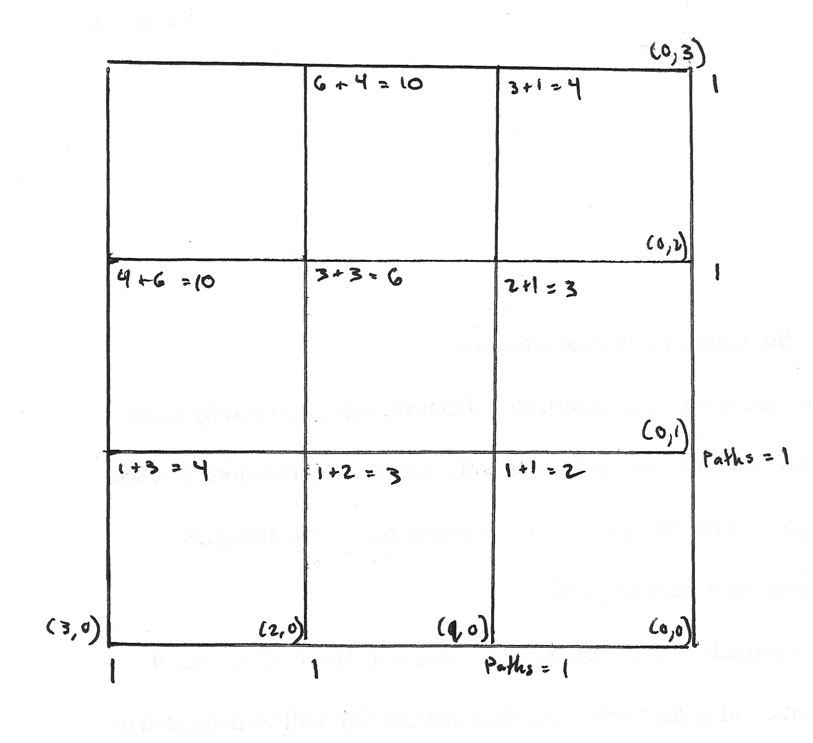

Consider the grid below. If you can only move right and down, how many distinct paths are possible from the upper left corner to the lower right corner?
This problem can be solved in a number of ways. The most obvious is to manually count each path individually (brute force). This solution is reasonable for very small grids, but as the grid size increases, it quickly becomes impractical and highly inefficient, and there is a much more elegant and efficient solution.
Recursion to the Rescue
This problem is an excellent example of a problem that can be solved relatively easily by dividing the problem into much smaller problems, solving each of those, and combining the answers to solve the bigger problem. The simplest case of the general problem of counting paths on a grid is counting the number of possible paths that can be taken on a straight line. Obviously, there is only one possible path if you are constrained to a single line, so this simple case is easily solved. The grid above can be divided into straight lines, but right now we lack a way to combine this simple cases.
To see the method to combine these subproblems, consider the square in the lower left corner of the grid. There is one path from the bottom-left corner or the top-right corner to the bottom-right corner, and there are two paths from the top-left to bottom-right. The number of paths is the sum of the number of paths from the vertex one edge down and the number of paths from the vertex one edge to the right. We now have the tools to define a function taking two coordinates and returning the number of paths to the bottom-right corner.

#Base cases
paths(x,0) = 1
paths(0,y) = 1
paths(x,y) = paths(x-1, y) + paths(x, y-1)In this recursive algorithm, the base cases are the vertices on the bottom and right edges of the grid. The value at all other vertices is calculated using the recursive formula above. The total number of paths of a grid of m squares by n squares is paths(m, n).
This recursive algorithm can be implemented in a relatively straightforward manner in any language.
Dynamic Programming
If you analyze the necessary function calls of the recursive algorithm above, you will notice that many calls are repeated. The larger the grid gets, the more repeated calls are made. Each time the function is called with the same arguments, it yields exactly the same answer, so repeating the computation is wasteful and terribly inefficient.
A simple idea can lead to tremendous increases in speed in this algorithm, and the same concept can be applied in a wide range of problems. The idea is that each time a subproblem is completed, the value associated with that subproblem is cached (recorded somewhere and remembered). This process is known as memoization.
memo = 2d array
paths(x, y):
if x is 0 or y is 0 return 1
otherwise
if memo[x,y] is not set:
memo[x,y] = paths(x-1,y) + paths(x,y-1)
return memo[x,y]
else
return memo[x,y]
Instead of wastefully repeating the same calculations over and over again, the algorithm 'remembers' whether the calculation has been completed already and simply returns the prior result if it has. This relatively simple change to the algorithm has amazingly significant effects for the performance and efficiency of the algorithm.
Analytic Solution
I feel that the recursive solution discussed above is more interesting, but for the more mathematically inclined it is worth noting that there is an analytic solution. If each distinct path is viewed as a sequence of moves (either down or left), the solution is equivalent to the number of m+n symbol words with m moves down and n moves right, or (m+n) choose m.